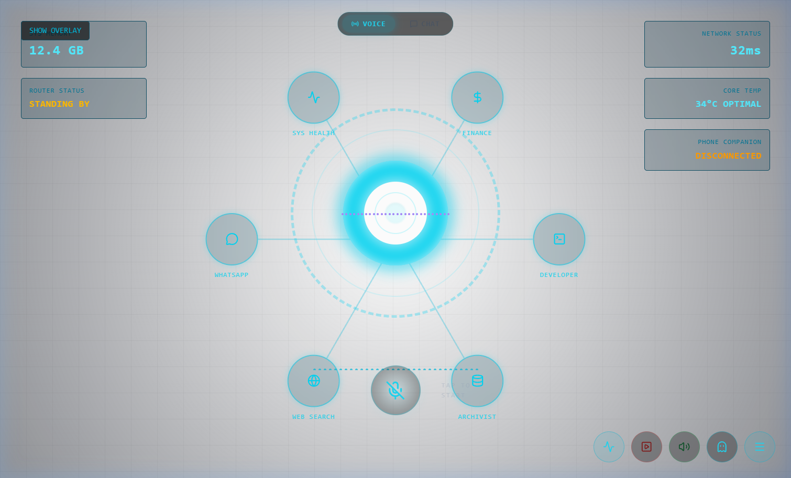
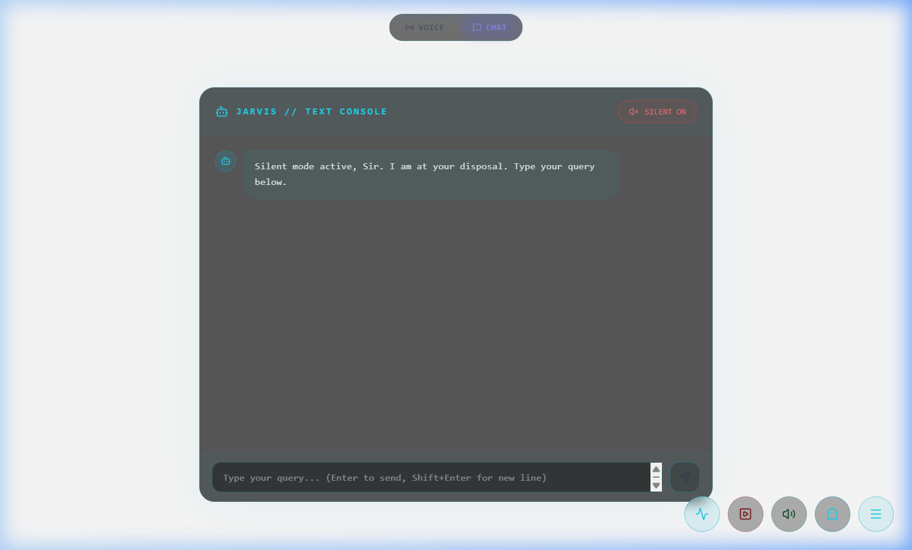
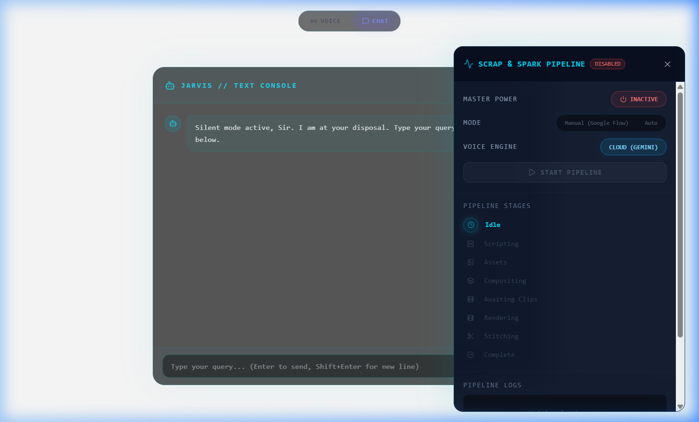

J.A.R.V.I.S. – Real-Time
Conversational AI Assistant
Ultra-low latency conversational agent orchestrating bidirectional audio streams, dynamic local/cloud LLM routing, and a synchronized WebGL visualizer canvas with zero server egress for confidential tasks.
End-to-end voice-to-voice turn around time with chunked audio streaming.
Zero third-party network calls for system control, file queries, and sensitive data.
Hardware-accelerated reactive Arc-Reactor visualizer shader loop.
Desktop Interface & HUD Telemetry

Audio Visualizer & Idle State
Spatial radial HUD monitoring system thermals, network latency, and memory footprint.

Streaming Voice Response & Console
Chunked bidirectional audio loop with integrated live chat fallback & memory retrieval.

Dynamic Intent Routing Dashboard
Drawer telemetry exposing automated intent dispatch, YouTube automation, and local tool pipelines.
End-to-End Pipeline Architecture
Audio Ingestion
Microphone stream into Silero VAD. 16kHz PCM ring buffer prevents audio clipping.
Silero VAD / OpusStreaming STT
Sub-300ms speech-to-text token streaming with interim hypothesis correction.
Faster-Whisper / WSIntent Router
Classifies prompt: Local Ollama (system ops) vs Cloud LLM (creative reasoning).
Adaptive ClassifierVector Memory
Retrieves context from embedded semantic memory store before LLM execution.
ChromaDB / HNSWSynthesis & HUD
Synthesizes voice tokens while driving reactive 60fps WebGL visualizer shaders.
WebGL / TTS AudioLocal Quickstart & Execution
cd D:\portfolio-deployments\jarvis-assistant
npm install ; cd backend ; npm install ; cd ..
npm run dev
npx vite --port 1420